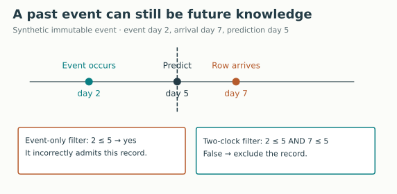
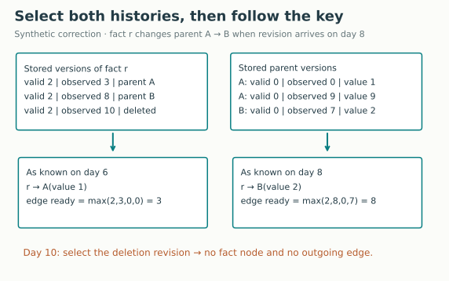
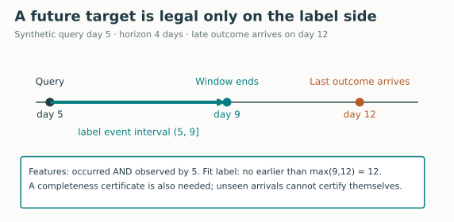
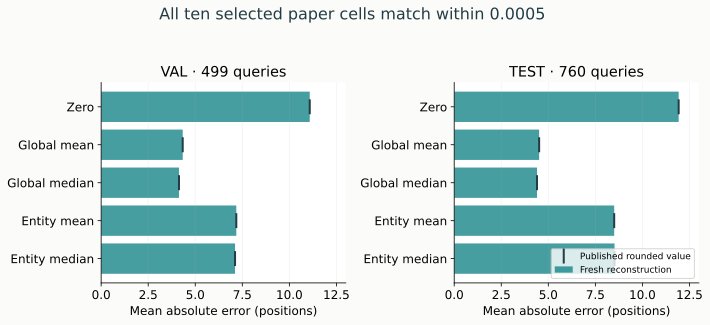

Year 3 · Quarter 3 · Lesson 109
Database timestamps: reconstruct what was known
One skill: turn database history into a defensible prediction-time graph
You have learned to sample a temporal graph. Now someone hands you a database containing created_at, updated_at, and date. Which one should govern the graph? By the end, you will write a timestamp contract, reconstruct historical row versions, and prove that a join uses the information available at its query time.
This is the hand-off from L096’s SQL-to-graph mapping, L104’s leakage audit, and L108’s temporal sampler to relational learning. A powerful sampler cannot recover a historical value that the database has overwritten. The mission requires both meaningful relational structure and an honest account of when it became usable.
First retrieve, without notes¶
- An event happened on day 2 and arrived on day 7. Can a day-5 prediction use it?
- Why can a correct foreign-key join still leak future information?
- What separates a target’s prediction time from the time it becomes safe to train on it?
Check after writing
No: it was not available by day 5. A key can link to a future row or a corrected value that was unknown at the query time. A future-window target must wait until the window has ended and the necessary outcomes are available, under a declared completeness policy.
1 · Name the clocks before choosing a column¶
In plain terms. “When did this happen?” and “When could our predictor know it?” are separate questions.
An event time marks an occurrence: a purchase, a race result, or a payment. An availability time, called observed_at here, marks when that information becomes usable by the prediction system. A queue delay, batch import, or feature-processing delay can separate them.
A valid time describes when a state applies in the world. For example, an address may be effective from day 2 even though its correction arrives on day 8. Valid time is useful for state histories; event time is useful for immutable occurrences. Do not give one column both meanings without a reason.
A system time records when a particular storage system recorded a version. It can supply availability evidence, but only if that system is the boundary your predictor actually reads. A downstream system may learn the value later. Fowler’s bitemporal history explains the two historical questions; SQL Server’s temporal-table documentation describes system-managed row histories. Neither a suggestive column name nor an old effective date establishes model availability.
| Column | Question to resolve before use |
|---|---|
created_at |
Creation of the entity, source row, or warehouse copy? Does this timestamp cover every field? |
updated_at |
Does it describe the current version only? Where are the old values? |
date |
Event occurrence, calendar date, planned date, or publication date? |
observed_at |
Observed by which system? Is the value already usable by the predictor then? |
Worked example. An immutable event has event time 2 and observed time 7. The query cutoff is 5. Checking only 2 <= 5 admits it. Checking both clocks rejects it because 7 <= 5 is false.

def legal_history(rows, cutoff):
"""Return indices of immutable events both occurred and observed by cutoff."""
return [i for i,row in enumerate(rows)
if row['event_time']<=cutoff and row['observed_at']<=cutoff]
Boundary contract. This lesson uses inclusive visibility: a fully available record at cutoff t may be used at t. L108’s TGAT event prediction uses strict-past history, excluding events at its cutoff. These represent different prediction orders. If a timestamp tie does not establish whether the query happened before or after publication, use a conservative boundary or an explicit sequence number. Do not let file order decide.
Clock units. Real-data comparisons use pandas timestamps with the release’s timezone-naive semantics. The synthetic lab uses integer days in one common clock. A production contract should declare timezone, precision, clock source and tie ordering. Converting a date without a time into midnight does not prove that all its fields were known at midnight.
2 · Reconstruct the value before joining it¶
In plain terms. A historical query needs the old answer and the old relationship.
An append-only history retains each received version instead of replacing the previous one. A revision identifies a correction. A tombstone is a stored deletion marker; it must win version selection before the deleted row disappears.
Our bounded state representation stores id, valid_from, observed_at, revision, deleted, and the row’s values. A new valid_from starts an effective step. Revisions with the same valid_from correct that step. At cutoff t, first keep versions with both valid_from <= t and observed_at <= t. Within each ID, choose the greatest (valid_from, observed_at, revision) tuple. Finally remove selected tombstones. Duplicate version keys are rejected, because they would make the answer ambiguous.
Worked example. Fact r became effective on day 2. Its first version arrived on day 3 and pointed to person A. A correction arrived on day 8 and pointed to B. A deletion arrived on day 10. A itself has value 1 until a retroactive correction arrives on day 9; B first becomes available on day 7.

At query 6, choose r → A and A’s value 1. At query 8, choose r → B and B’s value 2. At query 10, select the deletion and remove r. Dropping deletion records before version selection would incorrectly resurrect r.
def asof_versions(rows, cutoff):
"""Effective steps: latest valid_from, then latest known correction; ties inclusive.
Revisions correct the same effective step. A new valid_from starts a new step.
Tombstones are selected like any revision, then removed from the visible state.
This bounded representation is not a general overlapping-interval database.
"""
validate_versions(rows)
chosen={}
for row in rows:
if row['valid_from']<=cutoff and row['observed_at']<=cutoff:
key=(row['valid_from'],row['observed_at'],row['revision'])
prior=chosen.get(row['id'])
if prior is None or key>(prior['valid_from'],prior['observed_at'],prior['revision']):
chosen[row['id']]=row
return {key:row for key,row in chosen.items() if not row['deleted']}
An as-of join joins the versions appropriate to a historical cutoff. Here we first reconstruct both tables, then follow the selected fact’s foreign key. Joining current rows and filtering only the fact’s original creation time would retain the corrected relationship at earlier cutoffs.
Predict first: move the cutoff from 6 to 8. Which parent becomes visible? Then move it to 10. Does the deleted fact regain its older parent?
Worked answer, including a no-JavaScript fallback
The default day-6 state is r → A, A value 1, edge ready day 3. Day 8 uses the revised key r → B, B value 2, edge ready day 8. Day 10 contains no fact or edge. A’s correction at day 9 changes A’s value, but does not redirect r back to A. All stored versions stay fixed while the control changes the query cutoff.
Scope check. This is an explicit effective-step representation with corrections, not a general engine for overlapping valid-time intervals. A historical question can also use separate effective and knowledge cutoffs; our prediction query sets both to the same
t. Future schedules known in advance need their own feature contract rather than being treated as already-completed events.
3 · Emit a graph with an auditable timestamp contract¶
A primary key identifies a row within a table. A foreign key names a row in another table. A relational entity graph (REG) represents each row as a typed node and each selected key link as a typed edge. “Typed” means that a driver node and a result node retain their different table identities.
Our graph path is: stored versions → historical rows → historical key join → typed nodes and edges. The values and relationships come from the same historical state. A two-hop message cannot bypass that state by fetching a neighbor from a current-table cache.
In the synthetic implementation, an edge’s readiness is the maximum of the selected child’s valid and observed times and the selected parent’s valid and observed times. For day-6 r → A, this is max(2,3,0,0) = 3. For day-8 r → B, it is max(2,8,0,7) = 8. Readiness alone is insufficient: the edge also needs the selected versions, so an obsolete edge does not stay active forever.
Missing endpoint. A dangling reference points to a parent absent from the selected snapshot. We retain the child node, omit that edge, and count the omission. We do not invent a parent or silently reconnect to its newest version. Null foreign keys create no edge.
Multi-hop meaning. This graph represents the database as known at one root cutoff. Every hop uses that snapshot. TGAT’s recursive child cutoff in L108 answers a different question: represent a neighbor at the connecting event’s time. Do not accidentally mix these two graph semantics.
| Contract field | Synthetic versioned graph | Pinned F1 release graph |
|---|---|---|
| Node identity | (table, row ID) |
(table, stable reindexed primary key) |
| Time predicate | effective and observed by query | table’s time_col <= query |
| State changes | append-only revisions and tombstones | historical revisions unavailable |
| Relationship | FK in selected child version | FK in released row |
| Undated table | explicit historical versions | assumed eligible at every cutoff |
| Missing endpoint | omit edge; count it | omit edge; count it |
The full implementation is visible in the lab. The real-data graph function returns node-ID arrays and one [number_of_edges, 2] integer array per relation. These IDs remain stable after filtering; they are not automatically dense tensor row offsets. A later model must construct an explicit ID-to-tensor-index mapping. No neural encoder or GNN training is introduced here.
4 · Keep feature time separate from label time¶
In plain terms. A future outcome is the answer you train toward. It must not become part of the earlier question.
A prediction horizon specifies how far ahead the target looks. For query time t and horizon h, our target window is (t, t+h]: exclude the query instant, include the end. Features must satisfy the query’s information contract. Outcomes in the future window belong only on the label side.
Worked example. Query at 5, horizon 4, last required outcome arrives at 12. The outcome window ends at 9, but its label cannot be used for fitting at 9 if a constituent is missing until 12. Under a completeness certificate, its earliest fit time is max(9,12) = 12.

def label_ready(query_time, horizon, arrivals):
"""Earliest fit time, assuming the source certifies window completeness.
An observed-arrival maximum alone cannot prove no unseen event remains.
The caller must obtain a completeness watermark; this function assumes it.
"""
if horizon<0:
raise ValueError('Horizon must be nonnegative')
return max([query_time+horizon,*arrivals])
A watermark or completeness certificate states that all required events through a boundary have arrived under a defined policy. Taking the maximum arrival time of records already in memory does not prove that another record is not still missing. Even a zero-count label needs a closed window. Later corrections also require a label-version policy. The lab’s maturity function assumes certified completeness; it does not manufacture that certificate.
For a validation fit at time b, require each fitting label’s readiness to be at most b. Fit preprocessing and encoders using the permitted fitting data too. Correct graph filtering cannot repair an encoder that has already learned from future rows.
5 · Reproduce the complete selected F1 experiment¶
The primary reading is Robinson et al., RelBench v1, §2 and §5.2/Table 4. Read the split and regression definitions, then inspect the pinned task SQL and dataset timestamp construction. This package targets the entire five-heuristic slice for rel-f1/driver-position, on both validation and test.
What changes from L101? L101 read cached task labels. Here we start from all nine released database tables, rebuild the query schedules, regenerate every target, compare every query identity and target with the archive and original SQL, and only then compute predictions.
Follow one target. At a query date, select result rows in the next 60 days. Group them by driver. Average positionOrder, the finishing-order field. The column named position in the task table is this average; it is not a direct copy of the database’s separate position field. A driver with no result in that future window has no task row. This matters for interpreting the prediction population.
Released schedule. Training starts 60 days before 2005-01-01 and steps backward to the database’s earliest timed row. Validation steps forward from 2005-01-01 until the final complete window before 2010-01-01. Test starts at 2010-01-01 and uses at most 40 windows. Empty windows do not create examples. We generate the schedule independently and also execute the original scheduling and SQL code.
Released quirks. The task’s one-year “activity” subquery has a lower date bound but no upper bound. A selected future result already satisfies that predicate. We preserve it for exact comparison, then count how many task queries lack a genuinely prior-year result. This is a query-population audit, not a new paper benchmark. An alternative deployment task would define eligible drivers from known history, specify a target for no future race, and require separate evaluation.
Timestamp assumptions. The dataset assigns race timestamps to result and standings rows; qualifying is assigned the race timestamp minus one day. Drivers, constructors and circuits have no time column. These are release conventions, not measured ingestion times. A race start time does not certify that its final results were available then. Scheduled-race attributes and outcome fields may need different availability contracts in a deployment.
Estimators. Zero predicts 0. Global mean and median use all permitted fitting targets. Entity mean and median use that driver’s fitting targets, falling back to 0 for an unseen driver. Validation uses training labels; test uses training plus validation labels. These are deterministic estimators: no neural architecture, optimizer, random seeds or hyperparameter search is involved.
Metric. Mean absolute error (MAE) averages abs(prediction − target) over all query rows. Its unit is finishing positions; lower is better. A frequently appearing driver contributes more rows. We declare an absolute tolerance of 0.0005 against each paper value printed to three decimals. Repeating a deterministic calculation with different seeds would not provide uncertainty estimates.
Author-reference evidence, not your current notebook output. All 8,712 regenerated labels match both the cached targets and the original source SQL exactly.
| Split | Queries | Scheduled / nonempty windows | No prior-year result |
|---|---|---|---|
| train | 7,453 | 332 / 254 | 955 |
| val | 499 | 30 / 23 | 33 |
| test | 760 | 40 / 33 | 42 |
| Estimator | Validation MAE | Test MAE | Paper rounding verdict |
|---|---|---|---|
| global zero | 11.083200 | 11.926206 | MATCH / MATCH |
| global mean | 4.334385 | 4.512881 | MATCH / MATCH |
| global median | 4.135571 | 4.399101 | MATCH / MATCH |
| entity mean | 7.181002 | 8.501358 | MATCH / MATCH |
| entity median | 7.114262 | 8.518509 | MATCH / MATCH |
All ten fresh prediction vectors match the original baseline function within 1e-12. The real graph census checks 4,030 relations across 310 cutoffs; all ordered edge arrays match independent SQL joins. The synthetic suite adds 520 SQL selector comparisons, 390 SQL graph comparisons and five rejected broken implementations. These are correctness counts, not accuracy confidence intervals. Paid compute: USD0.

Interpret the evidence. The independent pandas implementation, unchanged released SQL, and cached targets agree. The original baseline function also agrees with all ten fresh prediction vectors. The graph census independently checks every relation at every distinct released query cutoff using SQL joins. These checks support the named reconstruction and stated timestamp policy; they do not establish real historical availability.
Scope check. Complete selected reproduction is achieved for the database-to-label reconstruction and five-heuristic slice. Raw Kaggle-to-database processing, LightGBM/RDL columns, other tasks and the rest of the paper are not reproduced. Historical execution identity and full-paper parity remain NOT_ESTABLISHED. Real ingestion/version histories are NOT_AVAILABLE. Synthetic history tests are separate course evidence. Live Colab and deployment remain NOT_CHECKED unless separately verified.
6 · Build and defend your own contract¶
Open the student lab, executed solution, and reproduction contract. The notebook includes the visible implementation, downloads hash-pinned inputs, and executes the complete selected numerical reconstruction on CPU. It has three live tasks: historical version selection, two-clock event eligibility, and label readiness. Their outputs are used by the graph and boundary checks; they are not decorative exercises.
Predict → implement → measure → diagnose. Predict the effect of a late correction. Implement the selectors. Run the full reconstruction. Diagnose why reproducing the released score still leaves ingestion-time assumptions unproven.
For your EXIT, submit a timestamped two-table graph specification with a late record, a corrected key, and a deletion. State each clock’s origin, boundary convention, row-version rule, dangling-key policy, and label completeness assumption. Supply one failing counterexample to event-only filtering and one to joining current rows. Include your fresh label/baseline report and explain the future-conditional driver population.
Ask the teaching agent follow-up questions or paste your contract for review. Author execution does not establish learner mastery: PENDING_WRITTEN_DEFENSE. For spaced practice, reconstruct the day-6 join tomorrow without notes, then add a delayed parent three days later. L110’s checkpoint will require these boundaries to survive a complete temporal model pipeline; Year 4 will carry them into database graph construction.